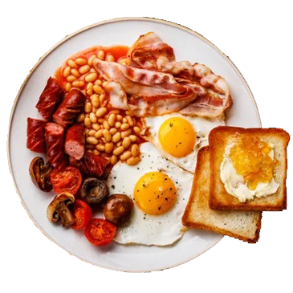
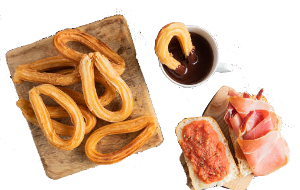
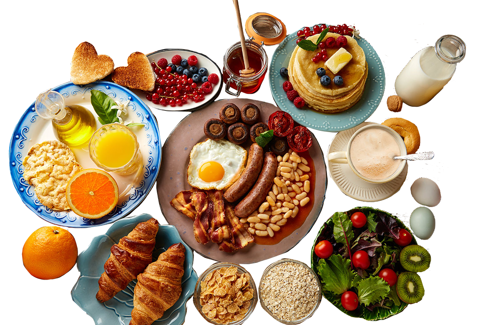
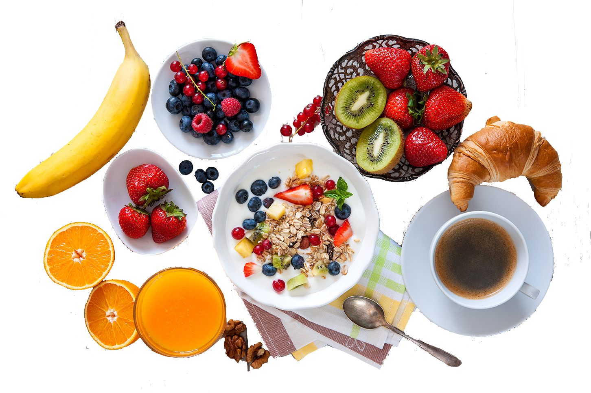
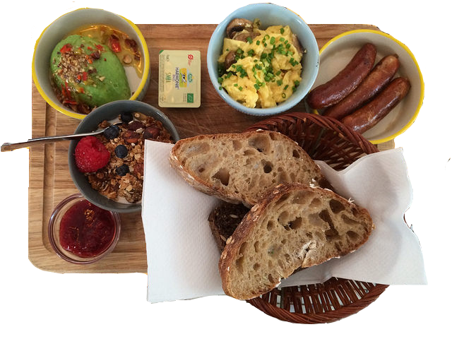

1 Regno Unito

Te
Uovo
Bacon
Toast
Crostone di cheddar fuso e spalmato
Formaggio
2 Spagna

Pane
Pomodoro
Formaggio
Salsiccia
Prosciutto
Churro
3 Stati Uniti

Renna
Omelette
Purè
Frutta esotica
Ciambelle
Vitello
Bruschette
Pomodoro
Formaggio
Polenta
4 Italia

Cereali
Brioche
Biscotti
Caffè
Cappuccino
Latte
5 Danimarca

Pane di segale
Formaggi
Salumi
Patè
Miele
Marmellata
Cioccolato
6 Francia
croissant con gocce di cioccolato, marmellata, miele, crema, panna, ricotta
Prosciutto
Formaggio
Caffè
Latte